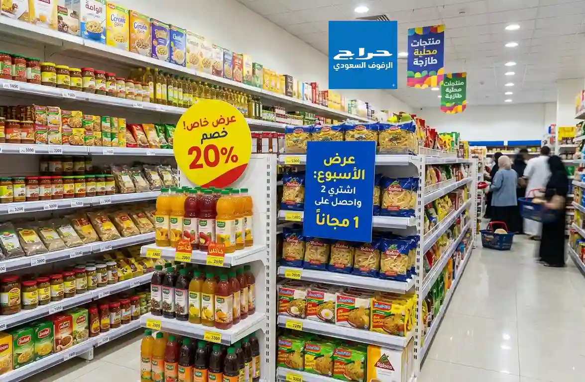

أسرار ترتيب رفوف السوبر ماركت لزيادة المبيعات وجذب الزبائن
هل تساءلت يوماً لماذا تنجح بعض المحلات في جذب الزبائن أكثر من غيرها؟ السر يكمن في تصميم أرفف العرض وطريقة توزيع المنتجات. إن تجهيز السوبر ماركت ليس مجرد وضع أرفف، بل هو فن يعتمد على دراسة حركة العميل.
إليك أهم النصائح عند اختيار رفوف التموينات:
- الارتفاع المناسب: يجب أن تكون المنتجات الأكثر مبيعاً في مستوى نظر العميل (Eye-Level).
- تنسيق الزوايا: استخدام رفوف الزوايا (End Caps) يعطي مساحة عرض إضافية للعروض الخاصة.
- الإضاءة واللون: الرفوف ذات الألوان الفاتحة (مثل الأبيض والرمادي) تعطي شعوراً بالنظافة والاتساع.
في حراج الرفوف السعودي، نوفر تشكيلة واسعة من أرفف المحلات التي تتميز بالمتانة وسهولة الفك والتركيب. سواء كنت تبحث عن رفوف جدارية أو رفوف وسطية (Double-Sided)، فإننا نضمن لك استغلالاً مثالياً لمساحة محلك.
نحن نقدم خدماتنا في كافة أنحاء المملكة، مع التركيز على توفير أفضل أسعار رفوف التموينات في الرياض بجودة تنافس المنتجات العالمية، مما يساعدك على البدء بمشروعك بأقل التكاليف وأعلى كفاءة.